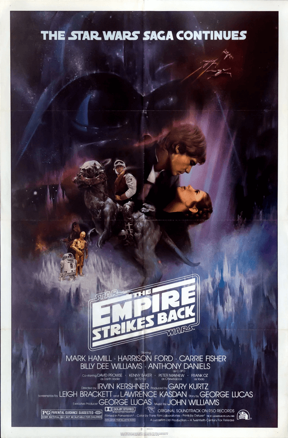

Star Wars: A New Hope (1977)

Luke Skywalker se embarca en un viaje que cambiará la galaxia. Diecinueve años después de la formación del imperio, luke se ve envuelto en la lucha de la alianza rebelde cuando conoce a obi-wan kenobi, que ha vivido aislado durante años en el planeta desértico de taooine. Obi-Wan entrena a Luke como Jedi cuando se une a él en un peligrosa misión para rescatar a la bella Princesa Leia de las garras de Darth Vader y el imperio del mal.
Después de la destrucción de la Estrella de la Muerte, las fuerzas imperiales continúan persiguiendo a los rebeldes. Tras la derrota de la rebelión en el planeta helado Hoth, Luke viaja al planeta Dagobah para entrenar con el Maestro Jedi Yoda. En un intento de convertir a Luke al lado oscuro, Darth Vader atrae al joven Skywalker a una trampa. en la ciudad de las nubes de Bespin
Star Wars: Empire Strikes Back(1980)
Star Wars: Return Of The Jedi (1983)
El imperio se prepara para aplastar la Rebelión con una estrella de la muerte más poderosa, mientras que la flota Rebelde monta un ataque masivo en la estación espacial. Luke Skywalker se enfrenta a Darth Vader en un duelo final culminante contra el malvado Emperador..
Obi-wan Kenobi y su maestro Jedi Qui-Gon Jinn descubren que Anakin gana la libertad de dejar su hogar y ser entrenado como Jedi. Anakin y la Reina se enfrentan a las fuerzas invasoras, mientras que los dos Jedi compiten contra Darth Maul. Pero la invasión es el primer paso en un plan para las fuerzas de la oscuridad que resurgen, los Sith.
Star Wars: The Phantom Menace (1999)
Star Wars: Attack Of The Clones (2002)
10 años después de la invasión de Naboo, la galaxia está al borde de la guerra civil. Bajo el liderazgo de un Jedi renegado llamado Conde Dooku, miles de sistemas solares amenazan separarse de la República Galáctica. Cuando se intenta asesinar a la senadora Padmé Amidala, el aprendiz de Jedi Anakin Skywalker es asignado para protegerla. Durante su misión, Anakin descubre su amor por Padmé, así como su propio lado oscuro. Pronto, Anakin, Padmé y Obi-wan Kenobi se sienten atraídos por el corazón del movimiento separatista y el comienzo de la guerra de los clones
Años después del comienzo de las Guerras Clon, los Caballeros Jedi lideran un enorme ejército de clones. Cuando los siniestros Sith revelan un complot para gobernar la galaxia, la república se derrumba y de su cenizas se levanta el malvado imperio galáctico. El héroe Jedi Anakin Skywalker, es seducido por el lado oscuro de la fuerza para convertirse en el aprendiz del emperador Darth Vader.
Star Wars: Revenge Of The Sith(2005)

Star Wars: The Force Awakens (2015)
Mientras Kylo Ren y la siniestra Primera Orden resurgen de las cenizas del Imperio, Luke Skywalker desaparece cuando la galaxia más lo necesita. Rey, una carroñera del desierto, y Finn, un soldado de asalto abandonado, deben unir fuerzas. con Han Solo y Chewbacca en su búsqueda desesperada de la única esperanza de restaurar la paz en la galaxia.
En un momento de conflicto, un grupo de héroes inverosímiles se unen en una misión suicida para robar los planos de "La Estrella de la Muerte", el arma de destrucción definitiva del Imperio.
Rogue One: A Star Wars Story (2016)
Star Wars: The Last Jedi (2017)

La resistencia intenta escapar de su base en el planeta D'Qar. Mientras Rey intenta convencer a Luke Skywalker de que la entrene en los caminos de la fuerza, Finn y Rose Tico intentan sabotear la flota de la Primera Orden para que los miembros supervivientes de la resistencia puedan escapar.
El joven Han Solo y su banda de contrabandistas intentan robar coaxium del planeta Kessel. Dado que necesita una nave muy rápida para la misión, Solo contacta a Lando Calrissian, el dueño del Halcón Milenario.
Solo: A Star Wars Story (2018)

Star Wars: The Rise Of Skywalker(2019)

Un año después de los eventos de "Los Últimos Jedi", los restos de la Resistencia se enfrentarán una vez más a la Primera Orden, involucrando conflictos del pasado y el presente. Mientras tanto, el antiguo conflicto entre los Jedi y los Sith llegará a su clímax, poniendo fin definitivamente a la saga Skywalker.